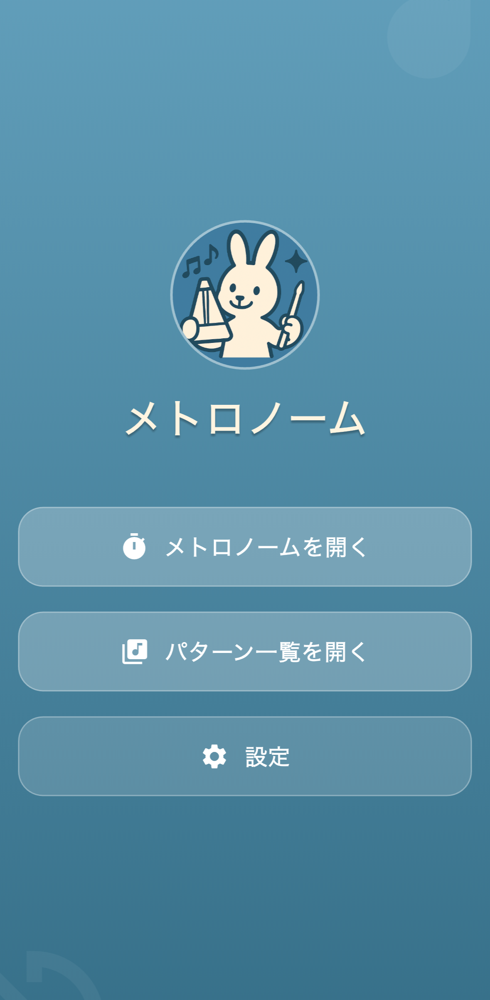
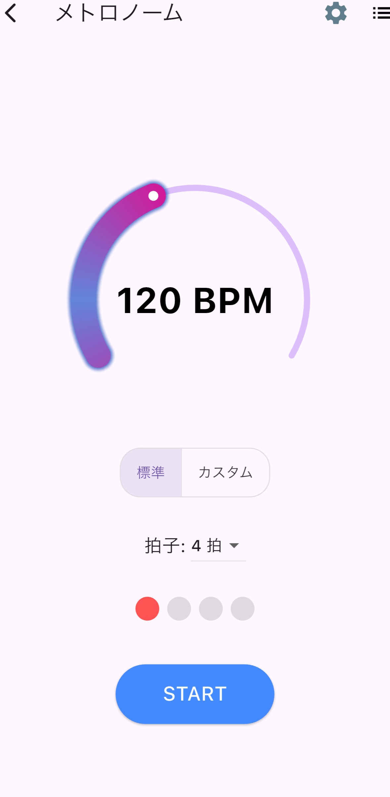
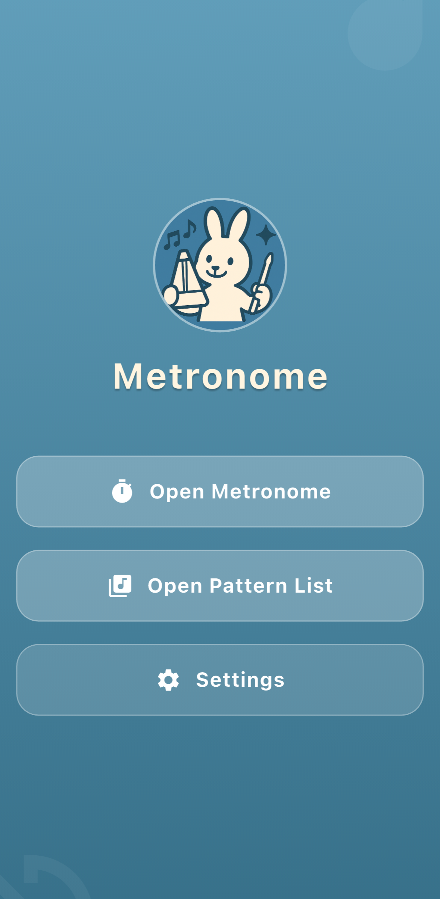
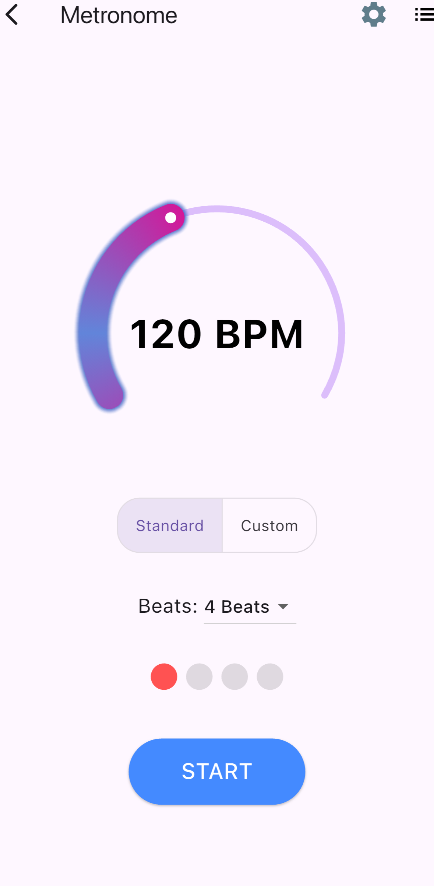

1
正確なテンポ再生
Precise Tempo Playback
WAV音源を利用した低遅延の オーディオ再生により、 楽器練習でテンポを確認するための 安定したクリック音を提供します。
The app uses WAV-based audio playback to provide stable, low-latency click sounds for practice.
リズムとテンポの練習を、 シンプルに、もっと自由に。
Practice rhythm and tempo with a simple and flexible metronome.
基本的なメトロノーム機能に加えて、 テンポ変化、ポリリズム、3連符、 サブディビジョンなどの練習に対応。 楽器演奏やリズムトレーニングを 日々の練習に取り入れたい方をサポートします。
In addition to basic metronome functions, the app supports tempo changes, polyrhythms, triplets and subdivision practice. It is designed to support everyday music and rhythm training.
「シンプルメトロノーム」は、 楽器の練習やリズムトレーニングで使える iOS向けのメトロノームアプリです。 基本的なテンポ確認だけでなく、 一定のテンポを維持する練習、 徐々にスピードを変える練習、 ポリリズムや3連符など、 より複雑なリズムを練習できるように 機能を構成しています。 操作を複雑にしすぎず、 「今の練習に必要なリズムをすぐ鳴らす」 ことを重視しています。
Rhythm Change Metronome is an iOS metronome app designed for music practice and rhythm training. Along with basic tempo practice, it supports exercises involving tempo changes, polyrhythms, triplets and subdivisions. The interface focuses on making it easy to start the rhythm you need for your current practice without unnecessary complexity.
実際のアプリ画面を確認できます。 メトロノームの設定やトレーニング機能を シンプルな画面から操作できます。
Take a look at the actual app screens and see how the metronome and training controls are organized.

ホーム画面

メトロノーム画面

Home screen

Metronome screen
通常のメトロノームとしての使いやすさを 保ちながら、さまざまな練習方法に 対応できる機能を用意しています。
The app keeps the simplicity of a traditional metronome while providing additional tools for different practice styles.
WAV音源を利用した低遅延の オーディオ再生により、 楽器練習でテンポを確認するための 安定したクリック音を提供します。
The app uses WAV-based audio playback to provide stable, low-latency click sounds for practice.
一定のテンポだけでなく、 スピードを変化させながら 演奏する練習にも利用できます。 テンポ変化への対応力を 身につけたい場合に便利です。
Practice with changing tempos instead of staying at one fixed BPM. This can help develop the ability to adapt to tempo changes.
ポリリズム、3連符、 サブディビジョンなど、 基本的な4分音符以外の リズム練習にも対応しています。
Practice polyrhythms, triplets and subdivisions for more advanced rhythm exercises.
最大250 BPMまで設定できるため、 高速フレーズやスピード練習にも 利用できます。
Tempo can be set up to 250 BPM, making the app suitable for fast-paced practice.
標準的なクリック音だけでなく、 ドラム系のサウンドも選択できます。 練習する楽器や好みに合わせて 音を変更できます。
Choose between standard click sounds and drum-style sounds according to your practice and preference.
練習中に迷わず操作できるよう、 必要な機能を分かりやすく配置しています。
Controls are arranged to keep the interface easy to understand while practicing.
練習したい曲やフレーズに 合わせてテンポを設定します。 最初は無理のない速度から 始めるのがおすすめです。
Set a tempo that matches the piece or phrase you want to practice.
クリック音を聞きながら、 音符やフレーズをテンポに 合わせて演奏します。
Play your instrument while listening to the click and keeping your performance in time.
慣れてきたらテンポを上げたり、 3連符やポリリズム、 テンポ変化などを取り入れて、 徐々に練習の難易度を上げられます。
Once comfortable, increase the tempo or try triplets, polyrhythms and tempo changes.
ギター、ベース、ピアノ、 ドラムなど、テンポを意識して 練習したい方に適しています。
Useful for guitar, bass, piano, drums and other instruments where timing matters.
クリックに合わせて演奏するだけでなく、 3連符やポリリズムなど、 より複雑なリズムにも挑戦できます。
Practice basic timing as well as more complex rhythms such as triplets and polyrhythms.
一定のテンポを維持する練習や、 徐々にテンポを変える練習を 日々のトレーニングに取り入れたい方に おすすめです。
Suitable for musicians who want to develop steady timing and practice changing tempos.
複雑な音楽制作機能ではなく、 練習に必要なメトロノーム機能を 手軽に使いたい方に向いています。
A good choice if you want practical metronome tools without unnecessary complexity.
はい。Rhythm Change Metronomeは無料で利用できます。 テンポ設定やリズムパターンなど、基本的なメトロノーム機能を サブスクリプション料金なしで利用できます。
Yes. Rhythm Change Metronome is available to use for free. You can use the core metronome features, including tempo control, rhythm patterns, and practice functions, without paying a subscription fee.
特定の楽器に限定されません。 ギター、ベース、ピアノ、ドラム、 管楽器など、テンポやリズムを 意識するさまざまな楽器の練習に利用できます。
The app is not limited to a specific instrument. It can be used for guitar, bass, piano, drums, wind instruments and many other types of practice.
最大250 BPMまで対応しています。 実際の練習では、演奏する内容に合わせて 無理のないテンポから始めることをおすすめします。
The app supports tempos up to 250 BPM. For practice, starting at a comfortable tempo is generally recommended.
はい。基本的なテンポ練習に加えて、 テンポ変化や複雑なリズムの練習にも 利用できるよう設計されています。
Yes. It can be used for basic tempo practice as well as exercises involving tempo changes and more complex rhythms.
日本語と英語に対応しています。
The app supports Japanese and English.
基本的なテンポ練習から、 3連符、ポリリズム、テンポ変化まで。 自分のレベルに合わせたリズム練習を 日々の演奏に取り入れてみてください。
From basic tempo practice to triplets, polyrhythms and tempo changes, use the app to add structured rhythm practice to your everyday routine.
App Storeでアプリを見る View on the App Storeメトロノーム、音楽練習、リズム練習、 BPM、テンポ、ポリリズム、3連符、 サブディビジョン、楽器練習、 ドラム、ギター、ピアノ、ベース、 リズムトレーニング
Metronome, music practice, rhythm practice, BPM, tempo, polyrhythm, triplets, subdivision, instrument practice, drums, guitar, piano, bass